Projects with a measurable outcome.
Each one started as a messy dataset and ended as something a business could act on.
EstateIQ — AI-Powered Real Estate Decision Intelligence Platform
A 10-phase intelligence pipeline that takes raw property, market, and location data all the way to a governed investment decision — INVEST, HOLD, or AVOID — with 11 orchestrated AI agents, Monte Carlo risk simulation, and every recommendation explained and evidence-cited, never just guessed.
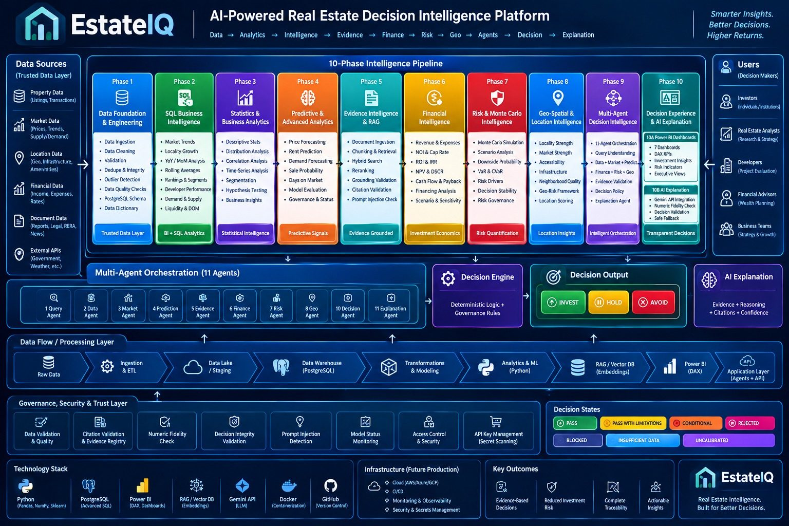
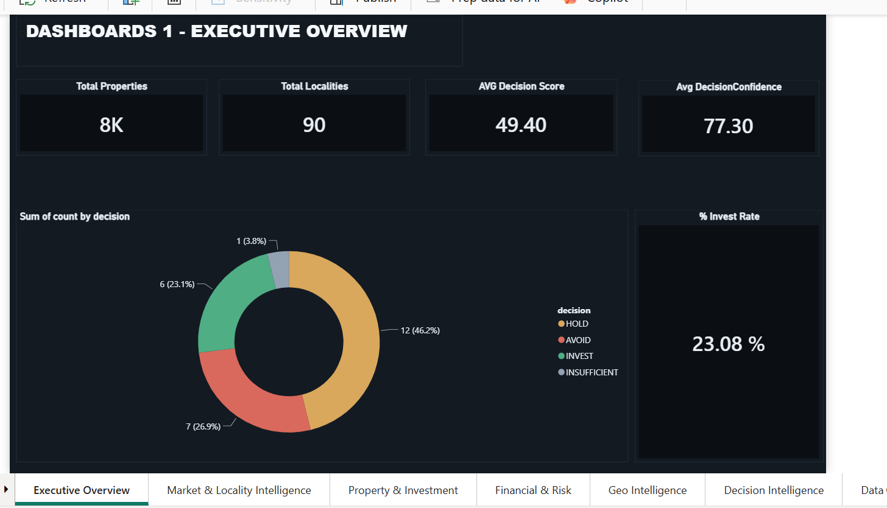

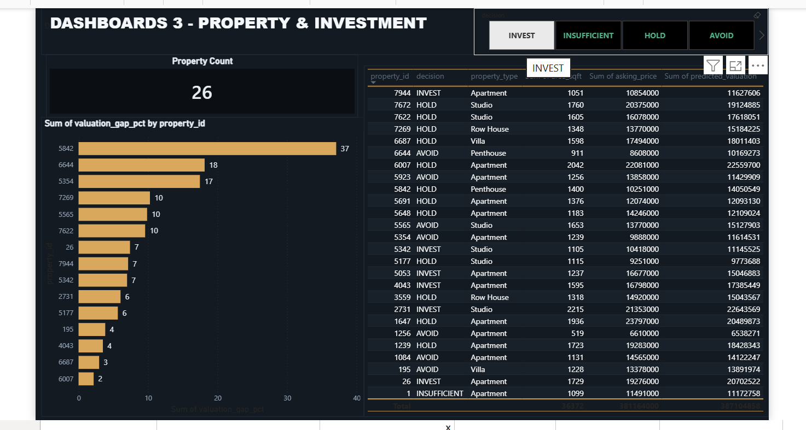


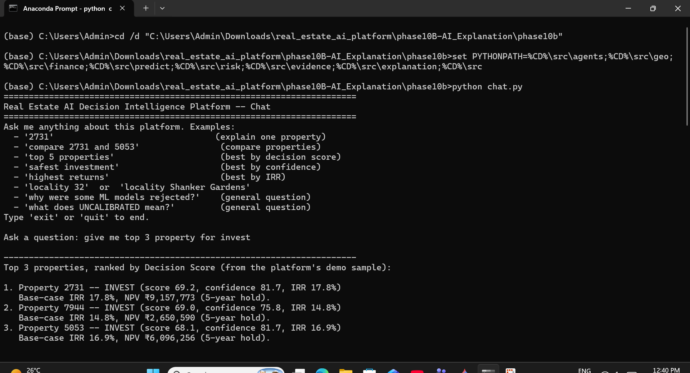
- Every decision is governed, not guessed — a deterministic decision engine sits on top of the AI, with pass/fail gates (evidence validation, numeric fidelity, decision integrity) before any INVEST/HOLD/AVOID label is issued.
- Confidence is explicit — every recommendation ships with a decision score, a confidence percentage, and the top reasons behind it (demand index, supply index, absorption rate, location score).
- Limitations are surfaced, not hidden — Monte Carlo probabilities are explicitly labelled "uncalibrated," and missing data (e.g. flood risk unavailable for 100% of localities) is flagged as insufficient data, never silently defaulted.
- Built for business, not just data science — the platform speaks in INVEST / HOLD / AVOID / INSUFFICIENT DATA, the language decision-makers actually use.
EcomIQ — AI-Powered E-Commerce Decision Intelligence Platform
Designed and built a full decision-intelligence pipeline on 9 raw source tables: SQL + Python analytics feed a verified-context layer, which grounds a Gemini-powered reasoning engine that answers business questions with evidence, root cause, and a recommended next action — not just a chart.
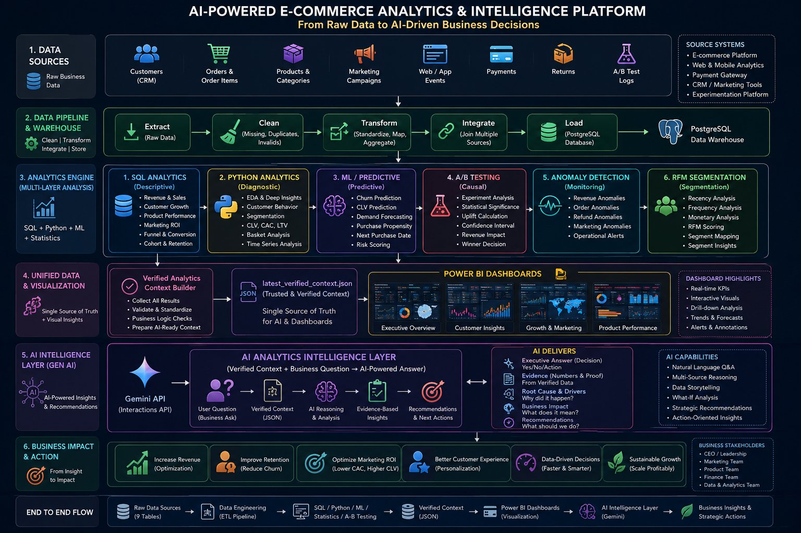
- Ship the checkout redesign — A/B test cleared both bars: statistically significant (p = 0.0024) and business-significant (+2.28pp uplift, 95% CI entirely positive).
- Prioritize 407 high-value, high-churn-risk customers for retention outreach before their 90-day churn window closes.
- Treat the 90-day revenue forecast as a floor, not a target — growth is accelerating past what the linear model predicts (backtest MAPE ~49%).
- Protect Champions + Loyal Customers — 43% of customers, 67% of revenue. Retention spend here outperforms broad acquisition spend.
- Route flagged anomaly dates to ops/finance/product teams as an investigation list, not an automatic root cause.
SaaS Growth Intelligence — From Activation to Profitability
Full-funnel diagnosis of a SaaS product: mapped the onboarding funnel to find the real bottleneck, ran a statistically validated A/B test on the fix, then re-scored every acquisition channel by LTV:CAC instead of signup volume — turning "which channel gets the most users" into "which channel is actually profitable."
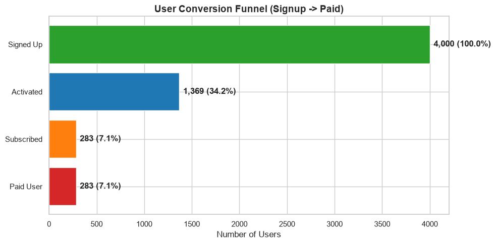
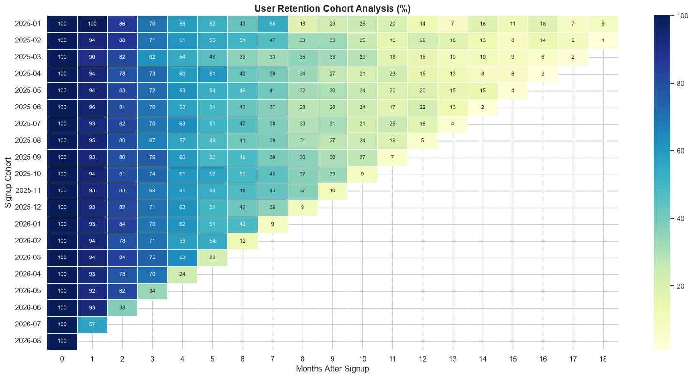
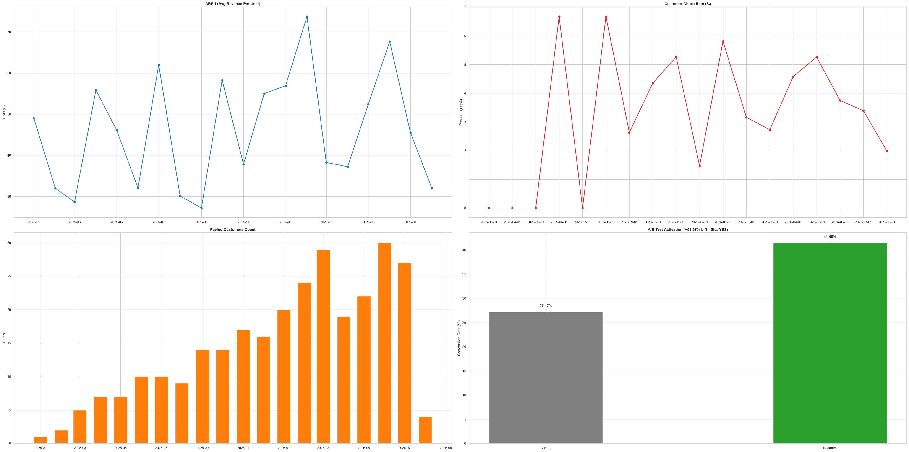
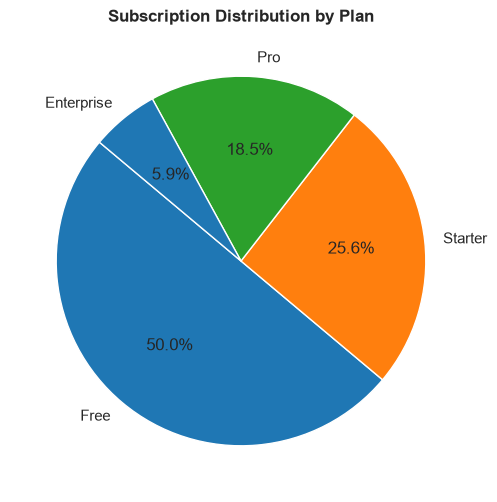
Customer Churn & Revenue Retention Analysis
Integrated 3 datasets (customer, subscription, support) using SQL and Python to build a business-ready analytical dataset, then analyzed churn against key KPIs — plan type, escalations, and CLV — to surface concrete retention opportunities.
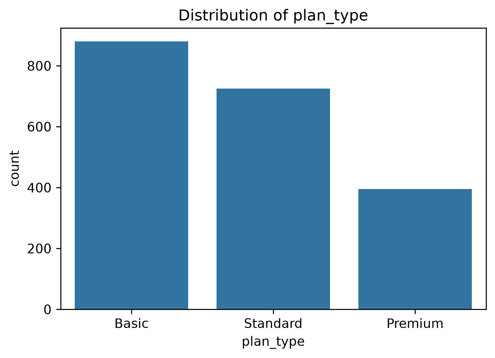
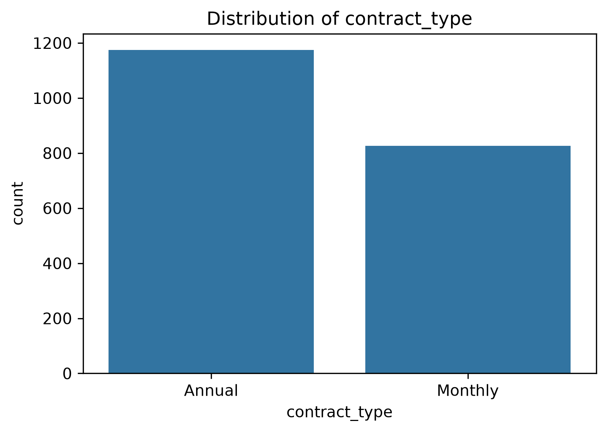
OLA Ride Booking Analytics — Bengaluru
Structured and queried one month of ride-booking data (103K bookings, 7 vehicle categories) in SQL — 10 views covering cancellations, ratings, and revenue — then built a 5-page Power BI dashboard for operations, revenue, and cancellation analysis.
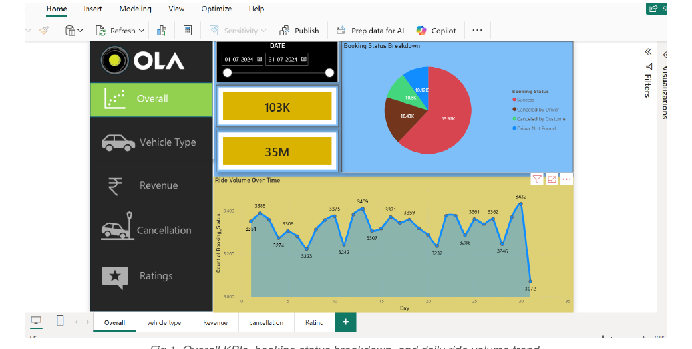
Blinkit Sales & Operations Analysis
Designed an interactive Excel dashboard over 8,500+ rows of grocery data, with custom KPI cards and slicers for real-time sales and outlet performance tracking.
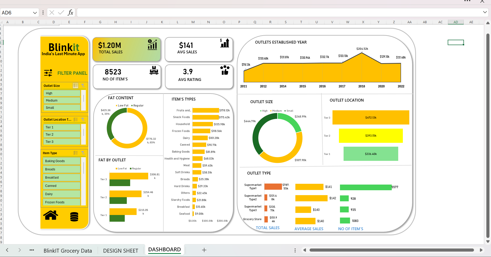